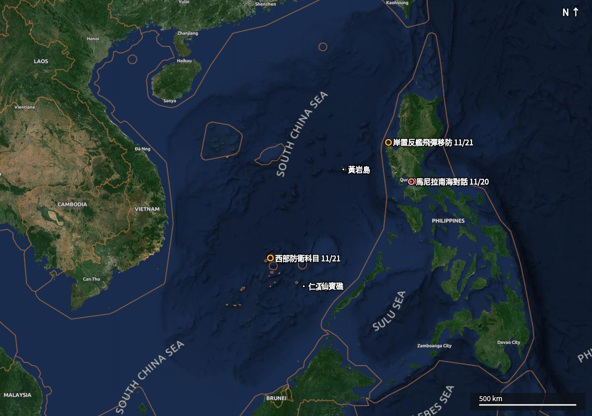
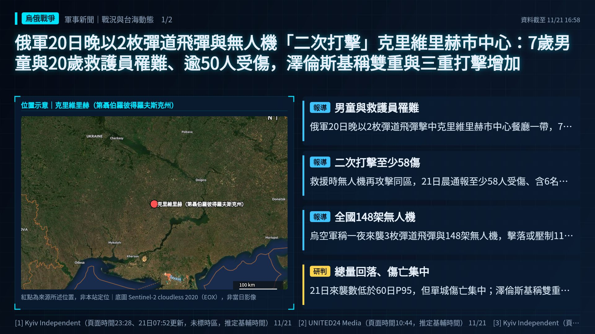
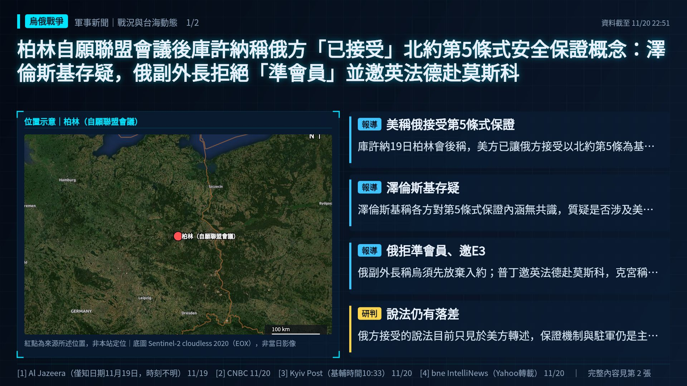
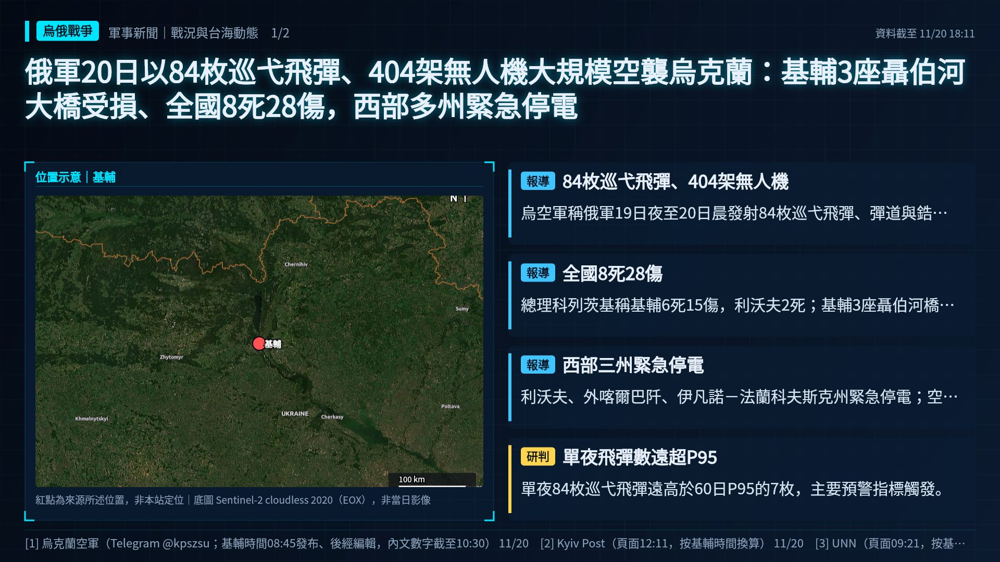
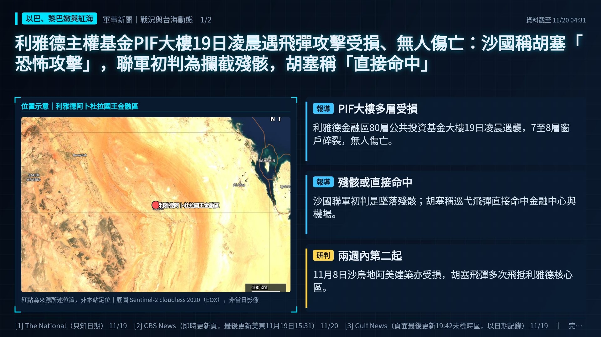
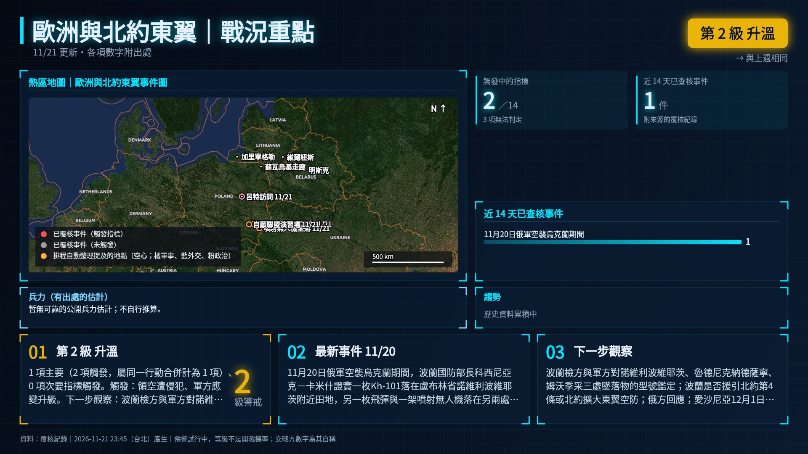

燈號上升
本站預警燈號升級。
報導標題：由第 1 級升至第 3 級「高度警戒」
公開來源整理｜最後更新 2026-11-21 23:45（台北）｜每 3 小時更新，出事時加開

國防部東部戰區美國印太司令部共軍海軍
背景脈絡：聯合戰備警巡是共軍不定期以戰機配合軍艦在台灣周邊集結的行動。APEC與美中俄峰會期間國防部統計的共機架次偏低，峰會一結束即出現警巡，外界關注北京是否恢復施壓節奏。
各方立場
可能走向：本站研判：共軍在美中兩軍磋商剛結束、台灣選前一週即恢復警巡，可能意在同時維持對美溝通與對台壓力；選前幾天可能再有類似行動，但官方數據顯示近7天無具名演習與航行警告。
👀 接下來看：國防部11月22日晨通報架次；東部戰區是否發布聲明
本站預警燈號升級。
報導標題：由第 1 級升至第 3 級「高度警戒」
貝肯帕帕羅林佳龍包大維施振榮高市早苗
背景脈絡：深圳APEC與美中俄峰會期間，新華社稱川普表態不支持台獨、陸委會初步查證非事實。峰會落幕後，台北一方面向美國國會爭取支持，一方面以援助鞏固太平洋友邦，並反擊北京主場外交。
各方立場
可能走向：AEI／ISW認為北京歷來把軍控談判當成牽制美國對台軍售的籌碼；美中俄峰會後北京可能藉核風險議題施壓，美國國會友台聲音則可能持續牽制白宮讓步空間。
👀 接下來看：美國國會涉台法案與軍售動向；習近平後續對台說法
邱垂正陸委會台南地檢署國台辦台灣民眾黨
背景脈絡：九合一地方選舉11月28日投票。AEI／ISW先前報告指出北京以AI生成內容、假民調與宗教交流試圖分化選民，並制裁沈伯洋父親關聯企業，介選疑慮在選前最後一週升溫。
各方立場
可能走向：本站研判：選前最後一週檢調可能再公布類似境外介選案件，北京對台商返鄉投票的補貼規模與成效，可能成為投票後朝野與陸委會攻防焦點。
👀 接下來看：11月28日九合一投票；選前檢調介選案與陸委會說明
卓榮泰蔡烱民金管會中央銀行
背景脈絡：美國商務部近日公布限制先進晶片與海外算力的新規，同時美股AI類股持續修正，中央社相關報導指輝達股價單週重挫14%，台股權值集中於半導體，受衝擊較深。
可能走向：若美股AI類股賣壓延續，台股與新台幣可能續受外資動向牽動；值得注意政院後續穩市措施與金管會限空令效果。
👀 接下來看：政院財經會議結論、外資賣超是否收斂
台積電三星美國商務部海軍131艦隊
背景脈絡：美國近期收緊對中先進晶片與運算出口管制，台灣廠商須配合調整客戶審查；國造艦艇也陸續完成交付。
各方立場
可能走向：若停接訂單屬實，中國IC設計業可能轉向本土晶圓廠，台積電中國營收比重值得注意。
👀 接下來看：台積電是否正式說明與12月21日期限
依據：Taipei Times、Yahoo Finance（24/7 Wall St.）、Focus Taiwan、Focus Taiwan｜本站自行整理
Meta國台辦陳斌華美中經濟安全審議會
背景脈絡：九合一地方選舉將於11月28日投票；警方統計今年1月至11月16日已偵辦251件選舉假訊息案。
各方立場
可能走向：投票前一週可能出現更多針對投票意願與候選人的AI影片，值得注意查核機構的揭露。
👀 接下來看：選前一週事實查核中心與調查局通報
依據：聯合新聞網（中央社）、大紀元、Taipei Times、yam蕃薯藤新聞、中時新聞網｜本站自行整理

Kim Kyung-ryulAkira Saito金正恩朴正天
背景脈絡：法新社報導，金正恩本週先後視察滑雪場、白頭山與海軍大學並強調海上防衛；川普訪亞期間，北韓官媒報導集中在民生與教育工地，未見公開軍事動作。
各方立場
可能走向：本站研判：川普離開亞洲後，北韓可能維持低調一段時間、專注月底黨細胞書記大會等內政；但官方數據僅反映近48小時，未來是否恢復試射仍需觀察。
👀 接下來看：南韓海軍參謀總長訪日成果、北韓是否恢復飛彈試射
依據：Korea Times（韓聯社）、SBS News｜本站自行整理
核能力升級是朝鮮半島最嚴重的升級訊號之一，通常會引發安理會與美日韓的強烈回應。
報導標題：North Korea has expanded its uranium enrichment plant, the IAEA head says 來源 ↗
川普習近平普丁金正恩高市早苗朴泰成
背景脈絡：川普訪亞前多次稱金正恩想見他，第一任內兩人見過三次；但川普19日離開深圳時未見金正恩。美中俄宣言聚焦降低核風險，未就北韓核武訂出具體作為。
各方立場
可能走向：NK News的O'Carroll認為金正恩可能不會再有更好的對話時機；本站研判：短期內美朝峰會可能擱置，首爾與東京可能各自尋求補強管道。
👀 接下來看：北韓外務省或金與正是否回應川普；美方是否提出新接觸方案
依據：Korea Times（韓聯社）、ABC News、Free Malaysia Today（法新社）、NK News、Yahoo News（路透）、Korea Times（韓聯社）｜本站自行整理
李在明曹喜大Cho Gye-won共同民主黨國民力量金正恩趙勇元
背景脈絡：大法院19日撤銷前總理韓悳洙內亂案二審判決並發回更審，民主黨20日正式決定推動彈劾大法院長，理由含大法院配合戒嚴與李在明選舉法案發回等。
各方立場
可能走向：本站研判：若民主黨12月3日提案，朝野對立可能進一步升高；政黨支持度差距縮小，可能使民主黨內審慎派聲音增強，提案時間仍可能調整。
👀 接下來看：12月3日是否提出彈劾案、北韓黨細胞書記大會召開日期
依據：Korea Times（韓聯社）、Korea Times（韓聯社）、Korea Times（韓聯社）、SBS News、Korea Times（韓聯社）｜本站自行整理
背景脈絡：AI需求帶動記憶體價格大漲，成為南韓出口主力。
可能走向：記憶體價格若反轉，南韓出口動能可能放緩；台灣記憶體與伺服器業也受同一循環影響。
依據：Seoul Economic Daily｜本站自行整理
TraderTraitorFBIElliptic幣安
背景脈絡：北韓長期以竊取加密資產取得外匯，此案規模遠超過往紀錄。
各方立場
可能走向：剩餘資金可能持續經跨鏈橋與混幣器分散，交易所凍結能力值得注意。
👀 接下來看：後續凍結金額與制裁行動
依據：Elliptic、Bloomingbit｜本站自行整理

菲律賓武裝部隊納法雷特馬基林帕迪亞
背景脈絡：DAGIT-PA是菲軍聯合演習，本屆為第十屆，主打領土防衛與海上安全；本屆在小馬可仕赴深圳APEC、菲中關係口頭轉暖之際舉行，且菲海警稱近期海上大致平靜。
各方立場
可能走向：本站研判：演習在外交降溫期照常進行，顯示菲方軍事整備與對中對話雙軌並行；演習至11月27日結束，中方是否對反艦飛彈部署或中業島科目公開回應值得注意。
👀 接下來看：11月27日演習結束前的反登陸實彈與海上打擊科目
依據：GMA News、Daily Tribune、The Manila Times｜本站自行整理
普拉伯沃習近平王毅小馬可仕納西爾
背景脈絡：2024年11月普拉伯沃首訪北京時簽署的聯合聲明提到「重疊主張區共同開發」，印尼外交部事後重申不承認中國南海主張。此次深圳會談是普拉伯沃兩年內第四度訪中，並伴隨大筆經貿協議。
各方立場
可能走向：CSIS AMTI認為菲律賓油氣前途取決於與中國聯合探勘談判；本站研判：印中共同開發若具體化，可能對菲越等聲索國形成示範與壓力，但印尼國內主權疑慮仍可能牽制落實。
👀 接下來看：印尼外交部是否說明共同開發區域位置，菲越是否回應
依據：ANTARA、Jakarta Globe、路透（Daily Maverick 轉載）、The Manila Times、Philstar、CSIS AMTI｜本站自行整理
衝突雙方通話、會談或停火協商，可能讓緊張暫緩（不會降低燈號）。
報導標題：Trump meets key US regional allies in Manila ahead of China visit 來源 ↗
塔瑞拉小馬可仕卡斯楚菲律賓海警菲律賓總統府
背景脈絡：菲外交部11/8曾提醒官員公開發言須符合總統外交政策；副總統莎拉．杜特蒂近期主張以談判取代與中國對抗，國內對中路線爭論持續。
各方立場
可能走向：本站研判：在行為準則交棒新加坡、川普淡化南海之際，菲國內可能更聚焦政府對中是否過度示好，2028年大選前對中路線可能成為政治攻防主軸。
👀 接下來看：菲國會與副總統陣營對小馬可仕APEC行的回應
依據：Daily Tribune、Daily Tribune、The Filipino Times、PhilNews、Daily Tribune｜本站自行整理

UKMTO伊朗革命衛隊美軍中央司令部Kpler以色列政府
背景脈絡：美國4月13日首度封鎖伊朗港口，6月18日解除、7月14日重新實施；伊朗則以限制荷莫茲通行回應。中央司令部稱6月以來已改道150艘商船、癱瘓5艘（伊朗國際）。
各方立場
可能走向：ISW研判伊朗可能數日內試闖封鎖；本站研判：若油輪結隊出航，美軍是否登檢或攔截，以及伊朗是否兌現攻擊波灣油設施威脅，可能是升級關鍵。
👀 接下來看：哈爾克島油輪是否結隊駛出、美軍如何攔截
依據：Jerusalem Post、Gulf News、Euronews、RFE/RL、CBS News、CSIS｜本站自行整理
本站預警燈號升級。
報導標題：由第 2 級升至第 3 級「高度警戒」
阿拉格齊川普卡達外交部巴基斯坦阿曼外長
背景脈絡：美國與以色列2月28日攻擊伊朗後，伊朗反擊以色列與駐有美軍的波灣國家。美方封鎖伊朗港口、伊朗限制荷莫茲通行，海上通行與封鎖成為談判主要障礙。
各方立場
可能走向：本站研判：雙方對誰先讓步與濃縮鈾去留仍各執一詞，川普又表明不急，短期突破可能有限；卡達、巴基斯坦傳話管道是否帶出新版本值得注意。
👀 接下來看：卡達下一輪斡旋與美方是否回應兩天方案
依據：Jerusalem Post（路透）、Ariana News（路透）、Press TV、CBS News、RAND｜本站自行整理
新一輪制裁或出口管制，反映外交施壓升級。
報導標題：Shafaq News..US sanctions four Iranians over alleged Iranian oil revenue collection 來源 ↗
阿拉格齊AmeliBayatAzizi法爾斯通訊社Mohebbi
背景脈絡：美國7月14日重新封鎖伊朗港口後，Kpler統計伊朗9月已無原油裝船；ISW指封鎖加劇通膨與貨幣貶值，強硬派要求以行動突圍的聲音隨之升高。
各方立場
可能走向：本站研判：強硬派輿論與收入斷崖時程相互推升，官方可能以「個別油輪掛旗開AIS」試探而非正式船隊；最高領袖或最高國安會是否表態是關鍵訊號。
👀 接下來看：最高國安會或最高領袖是否正式授權船隊出航
依據：Iran International、RFE/RL、Euronews｜本站自行整理
伊朗革命衛隊UKMTOOPEC+阿拉格齊
背景脈絡：美國自4月起封鎖伊朗石油出口，8月17日停火期滿後海峽攻擊頻傳；UKMTO自停火結束後記錄6艘船隻損失。
各方立場
可能走向：值得注意的是運量回升與攻擊增加同時發生，油價可能持續在供給過剩預期與航運風險之間拉扯。
👀 接下來看：11月29日OPEC+會議與哈爾克島油輪動向
依據：RTÉ（路透）、gCaptain、MarineLink（路透）、Press TV、CFR｜本站自行整理

沙國主導聯軍馬爾基胡塞薩里亞聯合國
背景脈絡：胡塞2026年7月重啟對沙烏地的戰事，近週在拉赫季、阿比揚推進逼近亞丁，曼德海峽周邊政府軍後撤；沙國11月18日已空襲荷台達，胡塞稱至少14死。
各方立場
可能走向：ISW認為空中打擊不足以扭轉地面戰局；本站研判：胡塞若兌現攻擊吉達等紅海港口的威脅，戰火可能外溢到紅海航運與沙國民生設施。
👀 接下來看：胡塞是否攻擊吉達港、亞丁外圍戰線變化
依據：Al Jazeera、The National、CGTN、ISW／CTP Iran Update｜本站自行整理
紅海與亞丁灣航運受威脅，會推高歐亞運費、保費與油價。
報導標題：Iran war sees tanker hit near Hormuz as Saudi Arabia intercepts Houthi missiles 來源 ↗
和平委員會格倫鮑姆阿布德拉蒂納坦雅胡哈瑪斯
背景脈絡：納坦雅胡2025年9月接受川普20點計畫、10月停火；哈瑪斯2026年7月30日接受委員會解除武裝方案，但納坦雅胡稱不足。委員會11月18日向安理會提報告，警告停火恐崩潰。
各方立場
可能走向：本站研判：以色列組閣未定前，看守政府可能難以批准國際穩定部隊等關鍵安排，美方施壓與埃及斡旋可能都要等新政府成形。
👀 接下來看：以色列是否簽穩定部隊駐軍協定、開羅新一輪會談
依據：Times of Israel、Arab News｜本站自行整理
安理會表決、IAEA 報告或北約峰會等正式行動。
報導標題：Next Security Council resolution on Lebanon puts framework agreement in focus 來源 ↗
艾森柯特納坦雅胡利伯曼班奈特聯合黨聖經猶太教聯盟Ra'am
背景脈絡：10月27日大選無陣營過半；赫佐格總統依67名議員推薦（含阿拉伯政黨19席）授權艾森柯特組閣，期限12月6日，可再延14天；納坦雅胡獲46名推薦。
各方立場
可能走向：本站研判：利伯曼若投反對票，少數政府可能難以通過信任投票；艾森柯特可能被迫在兵役讓步或與聯合黨妥協間抉擇，12月6日前仍可能申請延長。
👀 接下來看：11月22日Yashar與聯合黨第二輪談判、12月6日組閣期限
胡塞沙國聯軍薩里
背景脈絡：沙國與胡塞衝突延燒到經濟設施，紅海航運與沙國石油出口港面臨威脅，也牽動油價走勢。
各方立場
可能走向：若胡塞真的攻擊沙國紅海港口，紅海航運與保險成本可能再度上升。
👀 接下來看：吉達港是否遇襲與紅海航商動向
依據：Jerusalem Post（路透）、The National、Middle East Eye、Next Century Foundation｜本站自行整理

科西尼亞克－卡梅什諾瓦克呂特瑞典空軍北約空中作戰中心
背景脈絡：東方哨兵是北約2025年9月12日在俄無人機大舉闖入波蘭後啟動的東翼防空任務。這次越界與Nowa Dęba的Koalicja演習（11/9至22日）時間重疊，ISW指一處墜落點距演習場約35公里。
各方立場
可能走向：ISW認為北約若回應不一致，未來門檻可能被抬高。本站研判：呂特訪華沙後可能以預警機等偵察資產增援為主，但是否允許在烏克蘭領空攔截，短期內不太可能拍板。
👀 接下來看：呂特華沙行是否宣布AWACS或F-35增援東方哨兵
依據：Rzeczpospolita、Defence24、Defence24、Al Jazeera、ISW／CTP｜本站自行整理
北約國家為因應俄國攻擊而緊急升空或關閉機場，代表前線緊張升高。
報導標題：Nato jets scrambled after Russian missiles and drone hit Poland during attacks on Ukraine 來源 ↗
拉斯穆森佛瑞德里克森馮德萊恩卡拉斯丹麥安全情報局皮斯托留斯
背景脈絡：歐洲近期接連面對俄方越界與破壞陰謀；同時美方特使推動和談，俄副外長里亞布科夫11/20稱考慮邀德法英三國代表赴莫斯科，歐洲則擔心被排除在談判之外。
各方立場
可能走向：本站研判：依過往外交慣例，莫斯科可能對等驅逐丹麥外交官；歐盟新安全戰略與簽證限制可能成為下一輪歐俄角力焦點，也可能影響歐洲是否赴莫斯科對話。
👀 接下來看：俄方是否對等驅逐丹麥外交官；歐盟新安全戰略公布時程
依據：Kyiv Independent、Defence24、Rzeczpospolita、Defence24｜本站自行整理
衝突雙方通話、會談或停火協商，可能讓緊張暫緩（不會降低燈號）。
報導標題：Kushner floated NATO membership for Ukraine if it cedes Donbas to Russia in peace talks - report 來源 ↗
圖斯克科西尼亞克－卡梅什呂特川普札哈洛娃
背景脈絡：這是2025年9月無人機事件後，波蘭再次遭俄方武器越界墜落；當年波蘭啟動第4條，並促成北約啟動東方哨兵。這次越界正逢自願聯盟在波蘭舉行首場大型演習。
各方立場
可能走向：本站研判：圖斯克以爭取實質增援代替第4條，可能是為避免與川普淡化立場正面衝突；若呂特華沙行未帶來具體承諾，政府可能面臨更大國內壓力。
👀 接下來看：呂特華沙記者會內容與北約後續增援決定
依據：LRT、Al Jazeera、Rzeczpospolita、Euronews、ISW／CTP、Defence24｜本站自行整理
歐洲各國增加國防預算、恢復徵兵或發放民防手冊，反映對俄威脅的評估升高。
報導標題：German students march against social spending cuts, military conscription plans 來源 ↗

澤倫斯基普丁Oleksandr VilkulOleksandr Hanzha烏克蘭空軍
背景脈絡：烏軍11月17日以「火鶴」飛彈炸斷刻赤大橋一段後，普丁揚言以「痛得多」的打擊報復；11月19日夜俄軍發動本月最大空襲，基輔三座橋受損，克里維里赫遇襲緊接其後。
各方立場
可能走向：ISW記錄雙方持續互打後方設施；本站研判：俄方報復性空襲可能續鎖定橋梁與能源，烏方也可能持續打擊刻赤大橋與俄煉油設施。
👀 接下來看：刻赤大橋修復進度與俄軍下一波大規模空襲
依據：Kyiv Independent、Kyiv Independent、Kyiv Independent、ISW／CTP、烏克蘭空軍（Telegram）｜本站自行整理
本站預警燈號升級。
報導標題：由第 2 級升至第 3 級「高度警戒」
庫許納威科夫里亞布可夫普丁澤倫斯基馬克宏
背景脈絡：美、烏、俄11月10至11日在阿布達比三方會談，11月19日約40國的自願聯盟在柏林開會，美方代表出席並談戰後安全保證。
各方立場
可能走向：ISW認為俄方核心要求與美方兩案互不相容；本站研判：在俄方公開回絕下，短期內談判可能轉向保證內容與歐洲角色，而非領土突破。
👀 接下來看：美烏歐首次多邊團隊會議何時召開
依據：Al Jazeera、ISW／CTP、Kyiv Independent｜本站自行整理
衝突雙方通話、會談或停火協商，可能讓緊張暫緩（不會降低燈號）。
報導標題：Russia paints Putin's talks with Trump and Xi as a watershed moment and a snub to Europe 來源 ↗
Semen KryvonosOleksandr KlymenkoSerhiy KuzminykhDavid ArakhamiaSerhiy DukaJames Himes
背景脈絡：2025年夏季總統府團隊曾試圖剝奪反貪機關獨立性，引發全國抗議；反貪局9月與11月公布詐騙電話中心網路調查，指控該網路影響執法機關並涉毒品與偽鈔。
各方立場
可能走向：本站研判：反貪調查已延燒至談判代表與執法高層，總統府陣營與反貪機關的對立可能升高，並牽動和談團隊人事與西方對烏援助觀感。
👀 接下來看：Kuzminykh是否上訴與Duka案後續審理
依據：Kyiv Independent、Kyiv Independent、Kyiv Independent｜本站自行整理
TransneftUkrenergo布羅夫迪Ambrey
背景脈絡：雙方持續互打能源設施：烏方鎖定俄國煉油與輸油，俄方攻擊烏國電網與黑海航運，冬季用電壓力升高。
各方立場
可能走向：俄國燃料供應與烏國冬季供電可能同時承壓，黑海航運保險與運費值得注意。
👀 接下來看：俄國燃料出口限制與烏克蘭輪流停電範圍
依據：Kyiv Post、The Moscow Times、Kyiv Independent、Ukrinform、gCaptain｜本站自行整理
中國商務部弗拉修克科列茨基
背景脈絡：俄國以中國零件取代西方零件的比重上升，俄烏雙方都依賴中國無人機零組件；噴射無人機比活塞動力型更難攔截。
可能走向：管制執行力度與許可審查寬嚴，將影響俄軍噴射無人機擴產速度；未納管零件可能成為下一波制裁焦點。
👀 接下來看：中國許可核發情形、俄噴射無人機發射量
依據：Kyiv Independent｜本站自行整理
這些地區沒有預警燈號，只整理重點動態。
虔誠軍印度國家調查局巴基斯坦軍方
背景脈絡：印巴互指對方支持武裝團體，喀什米爾與巴國西北部的反恐行動持續。
各方立場
可能走向：巴方持續把境內攻擊歸咎印度，雙邊互信可能難以改善。
依據：Outlook India、India TV、Dawn、Dawn、CFR｜本站自行整理
國際法院若開軍克欽獨立軍敏昂萊
背景脈絡：敏昂萊自2026年4月起任「文人總統」，各地武裝衝突與空襲仍持續。
各方立場
可能走向：判決可能增加緬甸對外交涉壓力，但軍政府是否配合賠償仍待觀察。
👀 接下來看：緬甸政府對判決回應與美緬會談
依據：UN News、BNI、BNI、The Irrawaddy、BNI｜本站自行整理
蘇丹軍RSFUNICEF
背景脈絡：2023年4月內戰以來約1,300萬人流離失所；日內瓦談判10月底結束未達成停火。
各方立場
可能走向：若蘇丹軍拿下納胡德，戰線可能向達佛延伸，平民流離情況可能惡化。
👀 接下來看：納胡德戰況與RSF在藍尼羅州動向
依據：Anadolu Agency、Al Jazeera、Critical Threats｜本站自行整理
赫格塞斯羅德里格斯蓋亞那
背景脈絡：馬杜洛2026年1月遭美軍逮捕後，羅德里格斯出任代總統，美委關係轉向合作。
可能走向：美委軍事合作可能擴及哥倫比亞邊境，埃塞奎博爭議與蓋亞那關係值得注意。
👀 接下來看：協議細節公開與委哥邊境行動
依據：Al Jazeera、Demerara Waves｜本站自行整理
美國商務部工業安全局輝達CSIS
背景脈絡：美方近月持續調整對中AI晶片政策，一方面核准部分晶片出口，一方面封堵透過海外資料中心取得算力的管道。
各方立場
可能走向：東南亞資料中心業者可能面臨審查與客戶流失，台灣伺服器供應鏈訂單值得注意。
👀 接下來看：許可申請量與12月1日黃仁勳國會聽證
依據：Sidley、Customs & International Trade Law Blog、CSIS、The Next Web｜本站自行整理
Armory CastleGoogleMandiantCrowdStrikeN-able
背景脈絡：虛擬化平台與遠端管理工具是企業與政府網路核心，近年屢成國家級駭客鎖定目標。
各方立場
可能走向：使用VMware vCenter的台灣企業與機關可能需優先修補並清查入侵跡象。
👀 接下來看：各國CERT是否發布相關修補通報
依據：The Hacker News、The Hacker News｜本站自行整理
📌 11/21（六）每日摘要｜台海 3 級高度警戒：聯合戰備警巡｜美伊 2 級升溫：美軍打擊或攔截行動｜歐洲北約 2 級升溫：波蘭／羅馬尼亞／波羅的海國家領空遭侵犯｜烏俄 3 級高度警戒：能源設施遭打擊比例上升｜朝鮮半島 2 級升溫：北韓核試或核設施異常活動｜南海 1 級常態｜以巴紅海 3 級高度警戒：胡塞攻擊紅海／亞丁灣船隻。降溫訊號：台海、美伊、歐洲北約、烏俄。市場異常：台股加權指數 -6.2%。


克里維里赫市防衛委員會主席維爾庫爾稱，俄軍11月20日晚間以2枚彈道飛彈擊中市中心一家熱門餐廳的停車場一帶，救援人員趕到現場後，沙希德型無人機又攻擊同一區域，即所謂「二次打擊」（double-tap）。一名在餐廳遊樂區玩耍的7歲男童因頭部重傷送醫不治，一名20歲女性救護員罹難。第聶伯羅彼得羅夫斯克州長漢札通報的受傷人數在一夜間持續上修：基輔獨立報稿件更新為52傷、其中25人傷勢嚴重；聯合24媒體與基輔獨立報21日晨稿則稱至少58人受傷，含6名兒童與3名救護人員，28人住院、11人重傷。另有2名警方排爆人員與2名緊急救難署人員受傷。約23至25棟公寓、一所醫院、學校、商家與救護車受損，多區供水、瓦斯與電力中斷。
烏克蘭空軍21日晨通報，俄軍一夜發射3枚彈道飛彈（伊斯坎德爾-M／KN-23／S-400）與148架無人機，其中87架為噴射動力型；擊落或壓制117架無人機，全國19處有命中紀錄、9處落下殘骸。基輔獨立報彙整各州通報稱，過去一天全國至少2死83傷，哈爾科夫州索洛尼齊夫卡一棟五層樓遭無人機擊中、11人受傷。本站官方數據比對：烏方公布21日無人機148架、飛彈3枚，7日日均211架／枚，低於60日P95的360；前一天20日的大規模空襲（404架無人機與數十枚飛彈）已另稿報導。
澤倫斯基20日受訪時稱，俄軍正增加對烏克蘭城市的雙重甚至三重打擊；維爾庫爾指二次打擊瞄準「救援、醫護與公用事業人員」。這是烏方官員說法，俄方未就此次攻擊回應。值得注意的是，21日整體來襲數量明顯低於前一天，但單一城市傷亡卻相當集中，顯示傷亡規模未必與當夜來襲總量同步。克里維里赫是澤倫斯基家鄉，也是工業重鎮，過去曾多次遭彈道飛彈攻擊。本稿不推論俄方攻擊意圖，只記錄烏方說法與現場損害。
受傷人數在不同時點有47、52、58等說法，本稿以21日晨州政府與地方通報的至少58人為最新數字，後續仍可能變動。兩枚彈道飛彈的確切型號，以及餐廳附近是否有軍事目標，來源均未說明，也沒有獨立調查。基輔獨立報頁面時間未標時區，本稿依頁面日期與內容判斷事件發生於20日晚間當地時間。


據中東報（Asharq Al-Awsat）與半島電視台，沙烏地主導的「恢復葉門合法政府聯軍」發言人馬勒基少將11月20日（週五）宣布，聯軍對胡塞控制的紅海港口荷台達執行「特別行動」，打擊聯軍所稱用於走私與運送武器、彈道飛彈的港口作業能力，事前曾呼籲平民離開港區。聯軍並稱週五黎明在沙那摧毀7個軍事目標與6座製造彈道飛彈發射架結構與無人機的工坊，並癱瘓一處胡塞主要補給庫，針對沙那、薩達與塔伊茲省的打擊仍在進行。葉門政府為空襲辯護，指胡塞經該港接收走私的伊朗武器。以上目標性質與戰果為聯軍說法，胡塞方面的損害說法本輪未讀到。
阿拉伯新聞報導，沙國民防21日凌晨1時53分（當地時間）對利雅德發布「空中威脅」警報，馬勒基約2時後在X宣布防空攔截並摧毀胡塞射向利雅德的3枚彈道飛彈，目擊者稱首都傳出兩聲爆炸，報導未提及損害；民防同時對蘇萊伊勒、奈季蘭、吉贊與海米斯穆謝特發布預警。中東報引馬勒基另一聲明稱，一架飛向南部地區的胡塞無人機也遭摧毀。半島電視台稱這是利雅德連續第三天發布並迅速解除警報，週五起24小時內民防發出8次公開警報。阿拉伯新聞另稱，20日晚2枚射向吉贊的彈道飛彈遭攔截、殘骸落在舒蓋格一帶。胡塞在X稱正「打擊沙國各地目標，包括利雅德」。
半島電視台指出，胡塞揚言攻擊吉達等紅海港口、利雅德金融中心與西南部舒蓋格電廠，並警告航空公司沙國領空「不安全」；聯合國表示關切，警告持續交戰可能威脅葉門重要的援助補給路線。本站前稿已記錄19日利雅德公共投資基金大樓受損。值得注意的是，聯軍這次直接打擊荷台達港，而該港是葉門人道物資進口要道，這可能擴大民生衝擊；胡塞點名電廠與港口，也可能讓雙方的打擊目標從軍事設施擴及基礎設施。這是依來源所述威脅所做的推論，不代表雙方已實際攻擊這些設施。
荷台達與沙那的打擊目標、戰果均為聯軍公布，本輪沒有讀到胡塞或獨立機構的損害與傷亡說法；21日攔截的損害情形也僅有「未報導損害」。三份來源均未引述沙烏地通訊社原文。阿拉伯新聞與中東報頁面時間推定為沙國時間（UTC+3），半島電視台頁面只標日期。本站官方數據比對：美國對葉門旅遊警示維持第4級，近14天美英日台沒有新的升級或撤離公告；本戰區當天沒有其他與沙胡交火直接相關的量測數據。


據IANS與首爾經濟新聞引述英國海事貿易行動辦公室（UKMTO），11月21日約格林威治時間05:00，一艘駛出荷莫茲海峽的油輪在阿曼哈薩卜以北約11海里處船尾遭「不明彈體」擊中；約50分鐘後，哈薩卜以東約17海里處一艘油輪機艙遭攻擊，目前不清楚兩起是否為同一艘船。兩起均無人員受傷，是否造成污染尚待確認，UKMTO未公布船旗與攻擊者。首爾經濟新聞另引UKMTO稱，20日晚間約7時（時區未標明）一艘試圖出海峽的油輪在哈薩卜以北約8海里處左舷船首中彈起火。據首爾經濟新聞，革命衛隊透過官方媒體否認涉及彈體，稱該船是觸雷起火；IANS引伊朗陸軍海軍稱，一艘關閉導航系統、走「未經授權」航道的「違規」油輪觸雷起火。
半島電視台引伊朗國家廣播公司報導，革命衛隊稱21日以新型防空系統在荷莫茲海峽上空擊落一架MQ-9死神無人機，並稱是開戰以來第58架；稍後又稱在格什姆島上空擊落一架MQ-1，為第19次同類宣稱。美軍未立即回應，事件時間不明。伊朗外長阿拉格齊20日稱，伊方七項條件須落實荷莫茲才會重開，包括結束戰爭、解除制裁與南部港口的海上封鎖，並排除將60%濃縮鈾移往國外。川普20日在白宮稱伊朗想要協議，但不是他能接受的。美國財政部同日制裁4名被指管理非法石油收入的伊朗人，包括一名前革命衛隊情報官員。
首爾經濟新聞引彭博19日報導稱，本月荷莫茲油輪遇襲平均約每天一艘；IANS引新華社稱近幾週哈薩卜附近商船遇襲頻繁。值得注意的是，三起事件都發生在出海峽方向，且伊朗軍方以「觸雷」「違規航道」說法回應，與UKMTO描述的「不明彈體」不一致。這可能反映伊方試圖強制船隻走其指定航道，但目前沒有獨立證據可確認攻擊者或武器種類。本站官方數據比對：UKMTO近7天灣區船舶遇襲7件，低於60日P95的12件，最新一筆為21日UKMTO第215號通報，與本稿事件一致；布蘭特原油最近交易日僅漲0.6%。本站前稿已記錄美軍將封鎖擴及船對船過駁、伊朗醞釀油輪突破封鎖，本輪來源未見伊朗油輪實際突破的報導。
本輪未能直接讀取UKMTO官網（HTTP 403），事件細節依IANS與首爾經濟新聞轉述；首爾經濟新聞為AI翻譯韓文稿，措辭可能與原文不同。21日兩起是否同一艘船、20日晚事件的時區，均未確認。革命衛隊擊落MQ-9與MQ-1的宣稱、累計架數，以及半島電視台引述的美軍無人機損失數字，都沒有美方或獨立來源證實。


德國11月19日在柏林總理府主辦「自願聯盟」會議，德國總理梅爾茨、法國總統馬克宏、英國首相與澤倫斯基出席，美方特使庫許納與維特科夫與會。CNBC與基輔郵報報導，庫許納會後記者會稱，美方已讓俄方「對這個概念感到自在」：任何對烏安全保證都將以北約第5條為基礎；他稱俄方意圖是戰後「不再有另一場戰爭」，但也承認俄國內部仍有懷疑與不信任。庫許納稱川普對第5條式保證持開放態度，但必須符合美國利益、屬於更廣泛安全方案的一部分，並需有遵約監督與違約回應機制；他未說明保證如何運作。半島電視台報導，庫許納另稱川普希望「有歐洲在旁」達成協議，俄國同意歐洲上桌「對結束戰爭至關重要」。
澤倫斯基表示，柏林會上對第5條式保證的內涵沒有共同理解，並質疑是否意味美歐部隊進駐烏克蘭，稱「最重要的是各國對侵略如何反應」；基輔郵報引述他稱入北約仍是烏克蘭與歐洲最好的保證。馬克宏稱，鑑於俄方立場「極端」，必須重新討論烏克蘭加入北約，安全保證應先於領土談判。俄方說法方面，據bne IntelliNews引塔斯社，俄副外長里亞布科夫在聖彼得堡稱，任何讓基輔成為北約「準會員」的方案都不可接受，烏克蘭須先接受不入北約才能討論保證；普丁19日在深圳宣布邀請英法德（E3）赴莫斯科，里亞布科夫稱此行不代表與歐洲正式開談，克里姆林宮發言人培斯科夫稱「尚無確切日期」。基輔郵報稱梅爾茨提議下一輪四方談判可在阿聯舉行，地點未定。
值得注意的是，「俄方接受第5條式保證」目前只見於美方轉述，本輪未讀到克里姆林宮正面證實；俄方公開表態反而把「不入北約」列為前提，兩者可能指涉不同內容：美方談的是北約之外的雙邊或多邊承諾，俄方拒絕的是任何形式的準會員身分。邀E3赴莫斯科、但不接受歐盟另組的五方團隊，可能顯示俄方偏好與個別國家而非布魯塞爾打交道。保證的執行機制、是否涉及外國駐軍，仍是各方最大分歧，短期內不宜解讀為停火在即。
bne IntelliNews提到德法英烏另有聯合聲明（德國聯邦政府網站），本輪未讀到原文，不轉述其條文；E3訪莫斯科是否成行、日期與下一輪談判地點都未確定。本站官方數據顯示，烏方公布11月20日俄軍出動無人機404架、飛彈84枚，單夜飛彈數超過60日P95，外交接觸期間空襲並未降溫。半島電視台報導的會議出席名單以圖說為準，未另行核對。


路透社11月18日報導，美軍中央司令部當天發布航行公告：在海上以船對船方式，從受封鎖船舶接收伊朗裝載貨物的船隻，即使從未進入伊朗水域，也「可能被視為規避封鎖」，可遭攔停、登檢、改道、扣押，或被要求駛回貨物原裝港；不立即遵從合法命令者，可能面臨「符合適用法律的武力」執法。美國海軍中東司令部同日轉發的更新稱，封鎖不妨礙中立船舶經荷莫茲往返非伊朗目的地，但仍可能受臨檢。半島電視台指出，美方4月13日首度封鎖伊朗港口，6月因與德黑蘭達成諒解而解除，7月14日協議破局後恢復；截至20日刊出，伊朗官方未直接回應此公告。
gCaptain轉載彭博社報導，反核伊朗聯盟（UANI）依衛星影像與船舶追蹤資料指出，受美國制裁的蘇伊士型油輪Olym與未列黑名單的中型油輪Hao Fan，週二在波斯灣哈格島以南進行約20萬桶伊朗原油的船對船過駁，雙方關閉轉發器，Hao Fan並偽造位置顯示在阿曼附近，這是7月中恢復封鎖以來首次觀察到的過駁。海事執行者報導，兩船分別宣稱蓋亞那與尼加拉瓜船籍，該刊稱屬虛假登記。UANI顧問布朗研判，伊朗會嘗試「各種方式」把油運出。
海事執行者11月20日報導，與革命衛隊有關的法爾斯通訊社稱，14艘油輪已在哈格島裝載、配妥船員並升伊朗旗，並警告若出口受阻，將攻擊阿聯、沙烏地、卡達、科威特、阿曼與巴林油氣設施；油輪追蹤網站TankerTrackers先稱伊朗似在準備出口，後改稱「一廂情願，絕非如此」。Windward統計封鎖線一日航程內的阿拉伯海有31艘滿載受制裁油輪。報導引伊朗外長阿拉格齊稱「封鎖必須打破」。半島電視台另引革命衛隊發言人稱，美方「永遠無法」達成經濟封鎖，船隻若遭攻擊將「打得更重」。以上為伊方說法。
值得注意的是，公告把執法對象從駛離伊朗港口的船，擴大到在公海接駁的第三方船舶，執法地理範圍可能因此外擴。半島電視台引倫敦國王學院克里格稱，伊朗可繞過部分封鎖，但無法以軍事方式持續突破，並稱這可能是近幾週最危險的升級情境之一。彭博社報導的單次過駁量不大，UANI認為不足以構成經濟出口航次；若伊朗真以船隊集體出航，美軍是否登檢或動武，將是下一個觀察點。
14艘油輪船隊只有法爾斯單方說法，TankerTrackers已公開質疑；Windward統計日期報導未寫明。本站官方數據顯示，UKMTO近7天灣區船舶遇襲6件，低於60日P95的12件，最新為20日荷莫茲海峽#214通報，但UKMTO網站本輪回應403，未讀到該通報內容。美軍是否已依新公告實際攔停船舶，本輪未見報導。


烏克蘭空軍11月20日通報，俄軍自19日18時起至20日晨發射84枚Kh-101、口徑、伊斯坎德爾-K巡弋飛彈，另有伊斯坎德爾-M／S-400彈道飛彈與鋯石反艦飛彈，以及404架沙希德型、蓋爾貝拉與「Parodiya」誘餌無人機，其中123架為噴射動力沙希德。截至基輔時間10時30分，空軍稱擊落或壓制3枚彈道／鋯石飛彈、79枚巡弋飛彈與380架無人機，共462個目標；23處有命中紀錄、10處有殘骸墜落。發射區包括俄羅斯羅斯托夫、布良斯克、庫斯克、奧廖爾、沃洛格達州、克拉斯諾達爾邊疆區，以及被占的克里米亞與頓內茨克。空軍通報時攻擊仍在進行，鋯石飛彈未列發射數量。
基輔郵報與UNN引總理科列茨基稱全國8死28傷，其中基輔6死15傷；利沃夫當局稱2死；哈爾科夫一家急診醫院磁振造影大樓受損、4人受傷。基輔郵報稱基輔波季爾－沃斯克列先斯基、達爾尼茨基與南橋3座聶伯河橋梁受損，市長克里契科呼籲市民減少開車、企業讓員工遠距上班；一處污水處理設施也受損。利沃夫斯克尼利夫火車站售票處遭擊中。UNN稱利沃夫、外喀爾巴阡與伊凡諾－法蘭科夫斯克州實施緊急停電，鐵路也受損。空軍發言人伊赫納特稱巡弋飛彈多數瞄準西部、以能源系統為優先，彈道飛彈主要打基輔一帶，並稱是「最強烈的攻擊之一」。
本站數據顯示，烏方公布20日無人機404架、飛彈84枚，單夜飛彈數遠高於60日P95的7枚；7日日均203架／枚，仍低於60日P95的360，「飛彈與無人機超過P95」主要指標因單夜飛彈數而觸發。基輔郵報指出，普丁先前揚言在烏軍多次打擊克里米亞大橋後施以「痛苦得多」的打擊，伊赫納特週一也曾警告俄方準備再襲能源系統；時序上相符，但俄方是否明言此為報復，本稿未讀到俄方原文。值得注意的是，巡弋飛彈集中打西部能源、彈道飛彈打首都橋梁，可能意在同時削弱西部電網與基輔兩岸交通，這是本站推論。
歐洲新聞台引澤倫斯基稱俄軍發射逾400架無人機與逾110枚飛彈，高於空軍通報可計的84枚巡弋飛彈加3枚彈道飛彈，差異可能來自鋯石等未列數量的飛彈，尚待空軍完整數字。攔截與發射數字均為烏方公布，未經獨立核實。傷亡為科列茨基20日上午通報，攻擊當時仍在進行，可能再上修。跨入波蘭的飛彈與無人機另見本站歐洲安全稿。


沙烏地民防單位稱，利雅德金融區一棟大樓11月19日（週四）遭攻擊，多個樓層與周邊建築受損，無人傷亡，並稱這是胡塞武裝的「恐怖攻擊」、違反國際人道法。海灣新聞報導，受損的是阿卜杜拉國王金融區80層的公共投資基金（PIF）大樓，7至8層窗戶碎裂、部分金屬外牆變形，金融區入口封閉並疏散人員。國家報引居民稱約清晨4時45分被驚醒，民防事前發出空中威脅警報，爆炸後不久解除。沙國外交部譴責攻擊。CBS即時報導亦記錄沙國當局稱大樓受損、無人受傷。
沙國主導的聯軍發言人馬勒其稱已處置一枚飛向利雅德的飛彈，初步評估物損來自墜落殘骸，但未說明是否攔截成功。胡塞軍方發言人薩雷亞稱以巡弋飛彈攻擊哈立德國王國際機場與利雅德金融中心並「直接命中」，稱是報復沙國空襲葉門民用目標。聯軍另稱攔截一枚飛向南部的巡弋飛彈、摧毀4枚向南發射的彈道飛彈，並摧毀薩達省一處發射平台；胡塞的薩巴通訊社報導沙國空襲沙那。CBS整理，胡塞稱沙國空襲塔伊茲一處住所造成19人死傷。以上皆為交戰方說法，未獲獨立證實。
海灣新聞與國家報都指出，這是不到兩週內金融區第二起地標建築受損事件，11月8日沙烏地阿美一棟建築也在攔截過程中受損。哈立德國王國際機場此前遭襲，10月底才部分恢復營運。值得注意的是，無論直接命中或攔截殘骸，胡塞飛彈已多次飛抵首都核心區，可能顯示沙國防空對多方向、多彈種齊射的壓力升高。國家報另報導，葉門政府軍宣布撤離俯瞰曼德海峽的一處地區，可能讓胡塞在海峽周邊影響力增加，紅海航運風險值得持續觀察。比對本站官方數據：美國對沙烏地旅遊警示維持第3級、葉門第4級，近14天未升級，也沒有撤離公告，與此事件尚未引發外交撤離的情況一致。
聯軍初判與胡塞說法相反，本輪未讀到路透引述匿名人士稱直接命中的原文，故不採信任一方。胡塞本輪未讀到對PIF大樓的具名認領，薩雷亞聲明只稱打擊金融中心。三份報導發布時間：國家報只知日期，海灣新聞為更新時間且未標時區，均以日期記錄。
來源：國防部臺海周邊動態
資料：USNI News 艦隊追蹤（2026-11-16）；概略位置。
Taiwan’s Local Elections: The Races to Watch｜Brian Hioe
距 11 月 28 日投票剩一週，作者逐一盤點各縣市選情。台北市民進黨沈伯洋聲勢高漲（被稱為「黑潮」現象），即使落敗也可能是陳水扁之後民進黨在台北表現最好的候選人，蔣萬安的 2028 總統路因而受影響；台中市江啟臣被視為盧秀燕接班人，得票是否過六成將牽動盧的總統布局；高雄賴瑞隆知名度不足，柯志恩積極進攻；新北市蘇巧慧緊追李四川。文章也點出藍白在嘉義市、新竹市合作、在竹北破局，鄭麗文的黨內地位繫於選果，並提到國民黨大老提出的十年統一時程表引發爭議，黨中央已切割。作者結論是地方選舉主要看地方議題，但結果會決定 2028 的領跑人選。
對台灣的意義：地方選果會影響 2028 總統大選人選與藍白合作走向，也牽動兩岸路線辯論；十年統一時程爭議顯示兩岸議題仍可能干擾選情，值得觀察北京與美方如何解讀選果。
本站中文導讀，非全文翻譯｜已讀全文
What the Yalta Comparison Really Reveals About Shenzhen｜Beniamino Irdi
作者認為，美中俄深圳三方峰會的共同宣言內容空泛：聯合國改革、燃料供應與核風險對話都沒有具體內容，只有警告國際刑事法院一段較為明確；烏克蘭與伊朗都不在議程上。拿雅爾達會議對照，差異反而更有啟示：三位領導人各自處於弱勢，需要合影來展現實力；三國都是修正主義強權，視當前局勢為改善自身地位的中繼站；歐洲完全缺席，三方各以貿易、武力與意識形態壓迫歐洲。作者指出，三方真正的共通點是把主權視為強國不受約束的權利、偏好勢力範圍與雙邊交易，因此讓台北、基輔與東京擔心被越頂協商。
對台灣的意義：文章點出台北擔心三強越過當事方私下協議；三方都偏好勢力範圍與雙邊交易，這種思維若延伸到台海議題，台灣須留意在美中談判中被當作籌碼的風險。
本站中文導讀，非全文翻譯｜已讀全文
Congress and the Coming Crises｜Ivo H. Daalder, James M. Lindsay
作者認為民主黨贏得期中選舉靠的是生活成本議題，而油價、電價與利率問題都連結到伊朗戰爭、AI 資料中心與國債。伊朗戰爭消耗高價彈藥、把美國海軍困在阿拉伯海，加上盟友關係受損，北京與莫斯科可能把未來兩年視為機會之窗，例如中國封鎖台灣、俄羅斯試探波羅的海國家。作者主張新國會應援引戰爭權力決議與預算權逼白宮結束伊朗戰爭、修法讓國會可推翻對俄制裁豁免、恢復援烏，並在國防撥款法案中加速對台軍售、把「六項保證」入法，同時以聽證會檢討戰爭暴露的弱點並規範 AI 產業。
對台灣的意義：兩位前官員明確建議國會加速對台軍售、將六項保證法制化，並檢視美國因應中國脅迫台灣的準備；若獲兩黨支持，可能成為川普政府對中讓步的制衡力量。
本站中文導讀，非全文翻譯｜僅讀公開段落
| 日期 | 共機架次 |
|---|---|
| 11/21 | 2 |
| 11/20 | 8 |
| 11/19 | 1 |
| 11/18 | 9 |
| 11/17 | 5 |
| 11/16 | 4 |
| 11/15 | 1 |
| 11/14 | 10 |
| 11/13 | 30 |
| 11/12 | 7 |
| 11/11 | 4 |
| 11/10 | 4 |
| 11/9 | 1 |
| 11/8 | 4 |
| 11/7 | 11 |
| 11/6 | 3 |
| 11/5 | 21 |
| 11/4 | 22 |
| 11/3 | 49 |
| 11/2 | 19 |
| 11/1 | 32 |
| 10/31 | 13 |
| 10/30 | 6 |
| 10/29 | 6 |
| 10/28 | 6 |
| 10/27 | 3 |
| 10/26 | 3 |
| 10/21 | 29 |
| 10/20 | 14 |
| 10/19 | 5 |
虛線為過去 60 天的第 95 百分位，超過即觸發預警指標；單日偏高常見於聯合戰備警巡，不代表戰爭即將發生。


國防部 11/21 通報（前 24 小時）：共機 2 架次（逾越中線及進入空域 2 架次）、共艦 6 艘、公務船 1 艘。國防部未公布共機精確位置，圖上不標航跡。日本統合幕僚監部近 7 天公布中國艦艇／軍機動向 3 則。雷達衛星（Global Fishing Watch）最近過境：金門周邊 46 艘（未開 AIS 13）、馬祖周邊 59 艘（未開 AIS 15）、澎湖周邊 17 艘（未開 AIS 3）、海峽中段 106 艘。預警第 3 級 高度警戒，觸發：聯合戰備警巡、政府發布防空、飛彈或國家級實際告警、台股、台積電或新台幣單日異常下跌，或外資單日淨賣超異常等。

預警第 2 級 升溫，觸發：北韓核試或核設施異常活動。近 14 天沒有附座標的已覆核事件；圖上空心點是排程自動整理提及的地點，不是查核過的事件位置。

UKMTO 通報（台北時間）：近 30 天波灣／荷莫茲／阿曼灣船舶遇襲 30 件，近 7 天 8 件；最新為 11/21 Strait of Hormuz（UKMTO #216）。預警第 2 級 升溫，觸發：美軍打擊、伊朗報復鄰國、海上封鎖持續等。近期事件：11/19 華盛頓號離開中東後，美軍仍以布希號與羅斯福號兩艘航艦，搭配十餘艘驅逐艦、巡洋艦與…；11/18 11月18日凌晨（僅知日期與「清晨」，無確切時刻）伊朗軍方經國營電視台與法爾斯社…；11/18 一名未具名美軍官員11月17日向CBS、ABC等媒體證實，美軍戰機以精確彈藥打擊…。

預警第 2 級 升溫，觸發：領空遭侵犯、軍方應變升級。近 14 天沒有附座標的已覆核事件；圖上空心點是排程自動整理提及的地點，不是查核過的事件位置。

預警第 3 級 高度警戒，觸發：胡塞攻擊紅海／亞丁灣船隻、以色列對黎巴嫩、敘利亞、伊拉克或葉門空襲、安理會表決、緊急會議等國際組織行動。研究稿（11/21）：據中東報（Asharq Al-Awsat）與半島電視台，沙烏地主導的「恢復葉門合法政府聯軍」發言人馬勒基少將11月20日（週五）宣布，聯軍對胡塞控制的紅海港口荷台達執行「特別行動」，打擊聯軍所稱用於走私與運送武器、彈道飛…近 14 天沒有附座標的已覆核事件，圖上只標地名；沒有資料不代表局勢平靜。

11/13→11/21 DeepState 全線更新：俄軍推進 7 處（Rusyn Yar、Vilne、Petropavlivka、Vasylivka等），烏軍收復 0 處。本圖範圍控制區比較：俄方新增約 27 km²、烏方收復約 0 km²（像素估算）。烏克蘭空軍通報 11/21 無人機 148、飛彈 3（烏方數字）。預警第 3 級 高度警戒，觸發：能源設施遇襲、安理會、北約峰會等國際組織行動。
11/21 烏克蘭空軍通報：無人機 148 架、飛彈 3 枚；7 日日均 211（交戰方公布數字）。
戰場圖控制區資料：DeepStateMap.live（烏克蘭團隊依公開資料整理，非獨立證實；依其授權附出處使用）。另可對照 ISW 每日評估。

交戰方數字為其自稱。「政府投降」「國家戰敗」一類訊息一律是假訊息。本站為個人整理，非官方資訊。